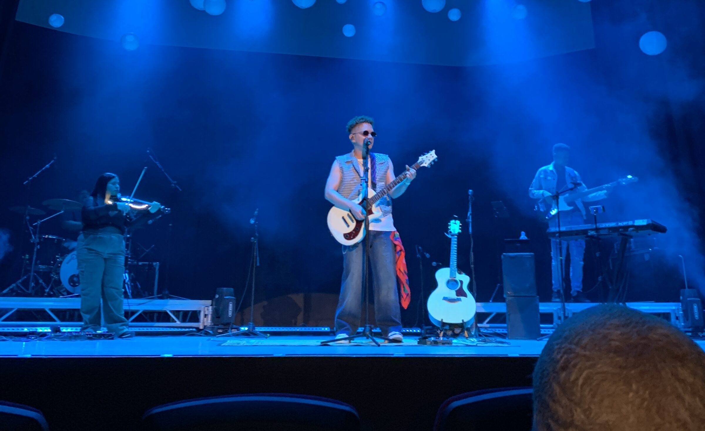
R&B · Soul · Pop Rock
Música para días felices y noches tristes. Artista y productor dominicano desde Nueva York.
Con la banda, en tarima. Toca el video para escucharlo.
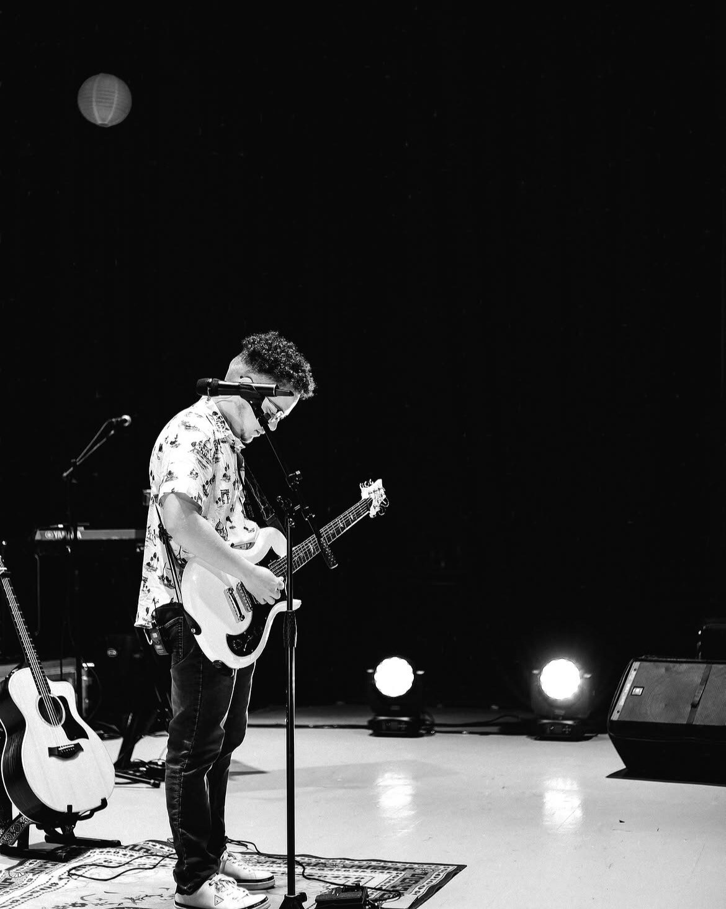
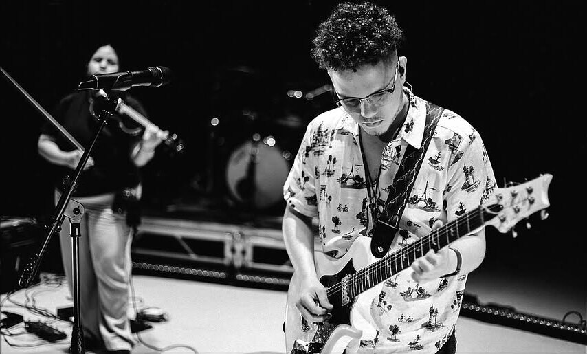
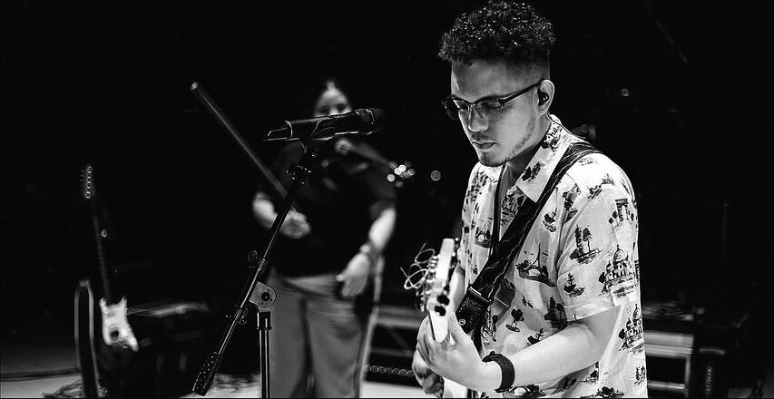
Dale play aquí mismo, o llévatela en tu plataforma favorita.
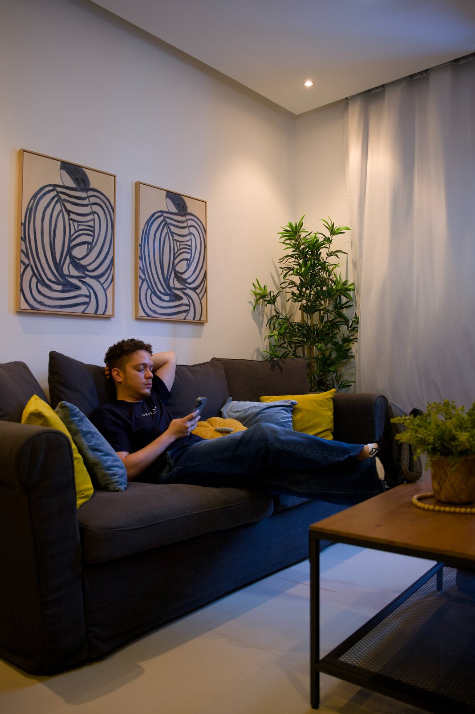
Soy El Científico — artista y productor dominicano radicado en Nueva York. Escribo, produzco y toco mi propia música, mezclando R&B, soul y pop rock en canciones que se sienten tan bien un viernes en la noche como un domingo en la mañana.
"Hago música feliz que te puede hacer llorar, y música triste que te hace bailar."
Cuando no estoy en el estudio, estoy en tarima con la banda o buscando el próximo sonido. Todo lo que escuchas sale de un laboratorio: el mío.
Galería
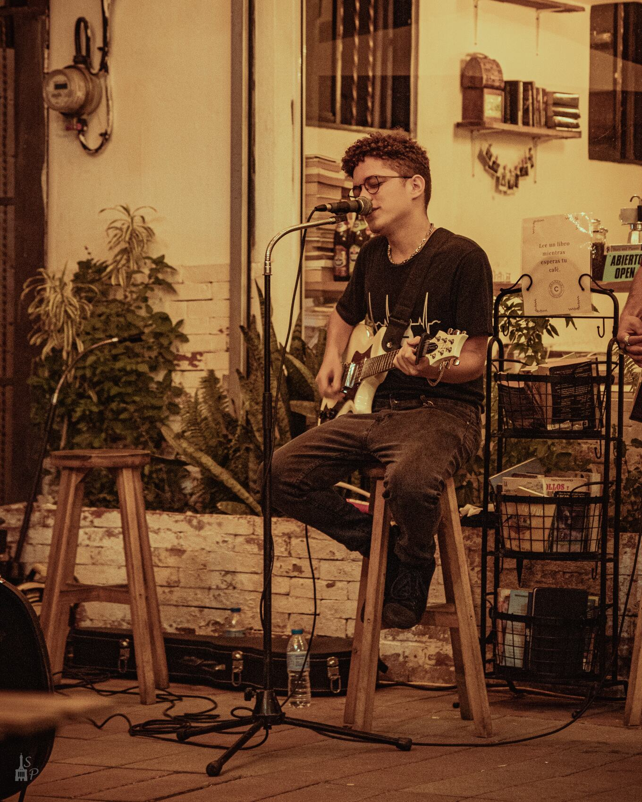
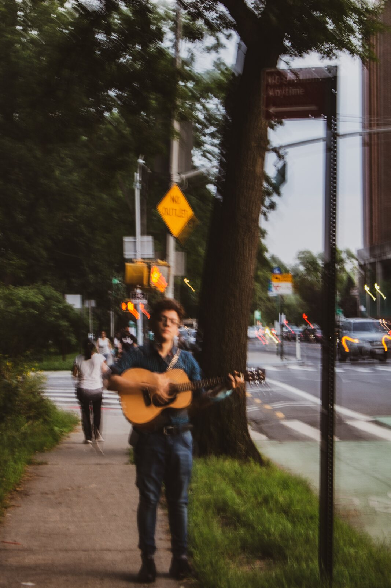
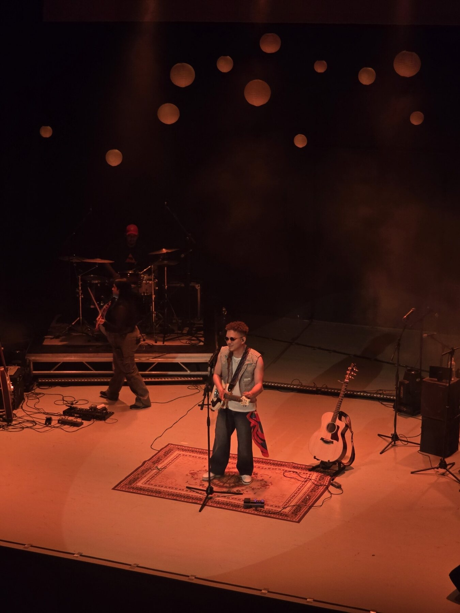
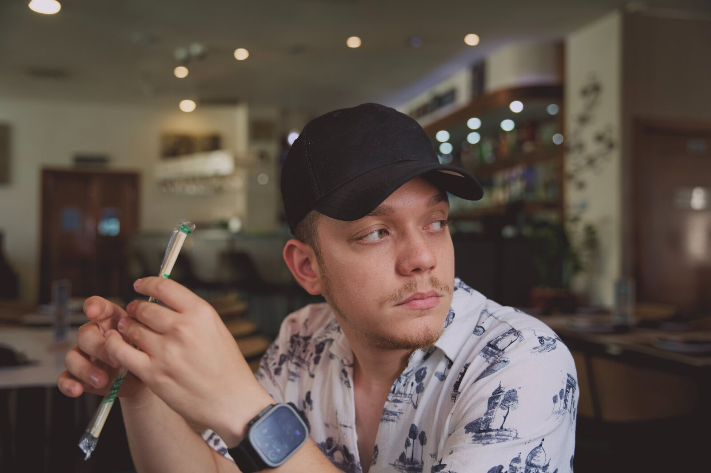
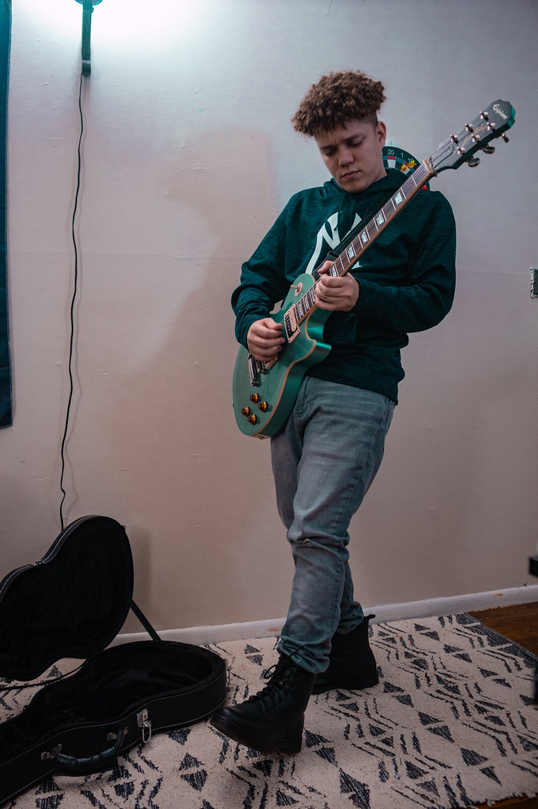
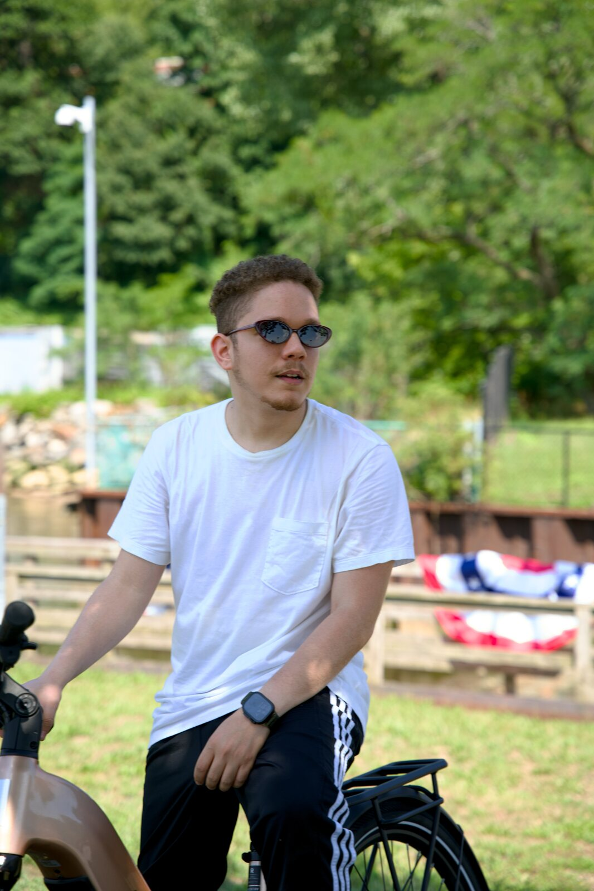
Para colaboraciones, booking y prensa, escríbeme directo por Instagram.
@elcientificodo